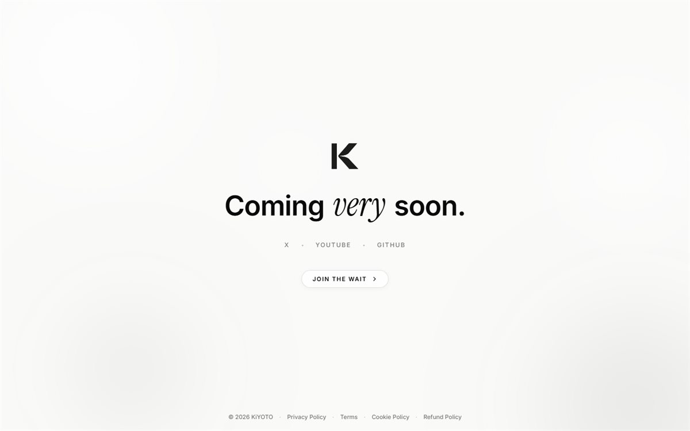

The creative software studio and experimental lab behind PacketBreaker. Crafting sovereign digital experiences, bespoke shaders, and tactile tools with uncompromising taste.

Rejecting generic corporate templates and AI slop. Every interface is constructed from bespoke typography, physical light modeling, and intentional micro-interactions.
Engineering raw GLSL fragment shaders, procedural noise meshes, and spring physics that react organically to user cursor velocity and tactile inputs.
Serving as the software lab where autonomous agentic software, developer productivity tools, and physical digital applications are conceived and deployed.
Autonomous agentic desktop IDE for Windows.